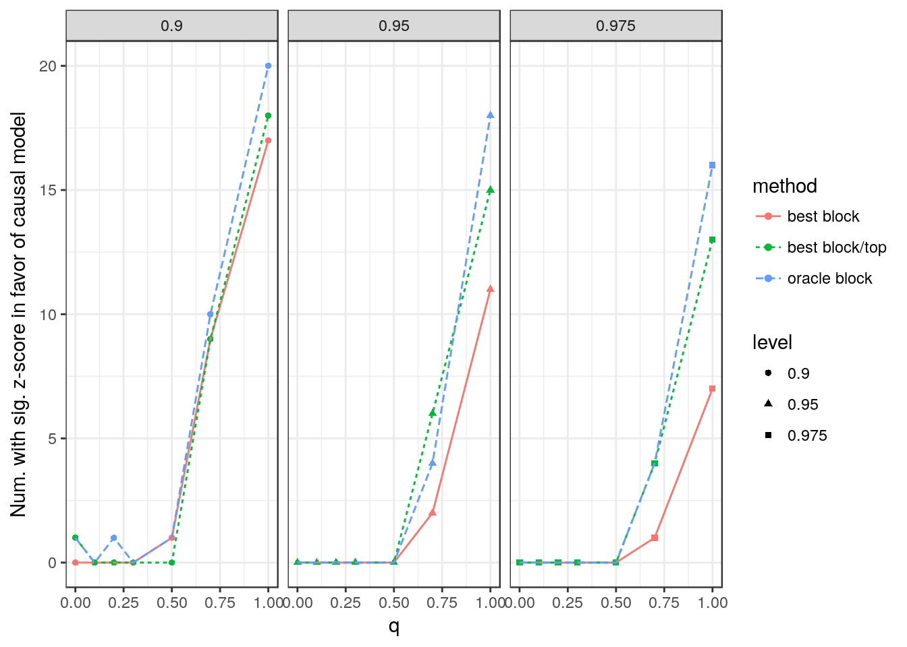

More LD Simulations
Jean Morrison
2017-12-12
Questions to answer
- In our previous simulations with LD, we found that we had very reduced power when we used a set of LD pruned SNPs in which we preferenctially chose SNPs with low trait 1 \(p\)-values. Why is this power low?
- Can we improve power?
- If we use a subset of SNPs, what is the best grid prior to use for the direct effects?
Set up
I decided to use a simpler LD structure to answer these questions. I pulled one 10 SNP wide LD block out of 1,000 genomes.
Each simulated data set contains 10,000 blocks of 10 SNPs. Each block has the LD pattern shown above. In each block there can be at most one effect SNP.
Analysis using all SNPs and oracle SNPs
First I compare two methods that don’t rely on pruning SNPs:
- All-nowts: Use all SNPs, calculate the grid prior using all SNPs
- oracle block: Use one SNP in each block. In blocks containing trait 1 effect SNPs, use the true trait 1 effect SNP. Grid parameters using this same set of SNPs.
The oracle block method shows the power we would expect in a similar problem with no LD. Ignoring LD in the “All-nowts” method results in somewhate higher type 1 error for some values of \(q\).
Best SNP per block
Now we consider
- best block: Use one SNP per block. Choose the SNP with the lowest trait 1 \(p\)-value. Grid parameters calculated using all SNPs.
- best block/oracle: Use one SNP per block but only include blocks with true trait 1 effects. As above, choose the SNP with lowest trait 1 \(p\)-value. Same grid as above.
- oracle/oracle: Use only the true trait 1 effect SNPs. Grid from the set of all SNPs used in “oracle block”

The “oracle/oracle” method should be the best. It includes only trait 1 effect SNPs and has a good set of SNPs to estimate the grid with. There shouldn’t be bias introduced by selection. This method is the most powerful but also has more type 1 errors. Disturbingly, we have more type 1 errors at \(q=0\).
“best block/oracle” is very similar to the “oracle/oracle” method. This shows that the loss of power can’t be explained by choosing the wrong SNP in effect blocks. The “best block” method has lower power. This must be a result of including SNPs that aren’t in trait 1 effect blocks but have higher trait 1 effect estimates as a result of selection bias.
More stringent selection
Based on these results, I experimented with using a more stringent threshold and including fewer SNPs when calculating the posterior distribution.
- best block/top: Use the best trait 1 SNP in each block but keep only the top 100 blocks. Grid calculated from all SNPs.

This substantially improved power but it also increased the false positive rate.
Session information
sessionInfo()R version 3.4.1 (2017-06-30)
Platform: x86_64-pc-linux-gnu (64-bit)
Running under: Ubuntu 17.04
Matrix products: default
BLAS: /usr/lib/libblas/libblas.so.3.7.0
LAPACK: /usr/lib/lapack/liblapack.so.3.7.0
locale:
[1] LC_CTYPE=en_US.UTF-8 LC_NUMERIC=C
[3] LC_TIME=en_US.UTF-8 LC_COLLATE=en_US.UTF-8
[5] LC_MONETARY=en_US.UTF-8 LC_MESSAGES=en_US.UTF-8
[7] LC_PAPER=en_US.UTF-8 LC_NAME=C
[9] LC_ADDRESS=C LC_TELEPHONE=C
[11] LC_MEASUREMENT=en_US.UTF-8 LC_IDENTIFICATION=C
attached base packages:
[1] stats graphics grDevices utils datasets methods base
other attached packages:
[1] dplyr_0.7.4 tidyr_0.6.3 matrixStats_0.52.2
[4] ggplot2_2.2.1 reshape2_1.4.2
loaded via a namespace (and not attached):
[1] Rcpp_0.12.13 bindr_0.1 knitr_1.17 magrittr_1.5
[5] munsell_0.4.3 colorspace_1.3-2 R6_2.2.1 rlang_0.1.4
[9] stringr_1.2.0 plyr_1.8.4 tools_3.4.1 grid_3.4.1
[13] gtable_0.2.0 htmltools_0.3.6 assertthat_0.2.0 yaml_2.1.14
[17] lazyeval_0.2.0 rprojroot_1.2 digest_0.6.12 tibble_1.3.1
[21] bindrcpp_0.2 glue_1.2.0 evaluate_0.10.1 rmarkdown_1.7
[25] labeling_0.3 stringi_1.1.5 compiler_3.4.1 scales_0.4.1
[29] backports_1.1.0 pkgconfig_2.0.1 This R Markdown site was created with workflowr